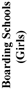

|
| A B C D E F G H I J K L M N O P Q R S T U V W X Y Z |
(Also known as NEW HOLLAND till about 1817).
Australia is geographically the world's great island-continent. Politically, the mainland, with the adjoining island of Tasmania, forms the Commonwealth of Australia. This is under the British Crown and consists of the following six States, which were federated on 1 Jan., 1901, and are here named in the order in which they became separate colonies of the British Empire: New South Wales (1788); Tasmania (1803); Western Australia (1826); South Australia (1836); Victoria (1851); and Queensland (1859). The Commonwealth covers an area of 2,980,632 square miles. It is, territorially, about one-fourth smaller than Europe, one-sixth larger than the United States (excluding Alaska), over one and a half the size of the Indian Empire, more than fourteen times larger than Germany or France, and about twenty-five times larger than the British Isles. At the census of 1901 the population of the six States was as follows: New South Wales, 1,339,943; Western Australia, 182,553; Victoria, 1,201,341; Queensland, 503,266; South Australia, 362,604; Tasmania, 172,475. This gave the Commonwealth in 1901 a total population of 3,782,182. The official estimate of the total population for December, 1905, was 4,002,893.
The north and west coasts of Australia figure in the maps of Spanish and Portuguese navigators as far back as about the year 1530. But it was the War of American Independence that led to the settling of the white man on the shores of the great lone continent. At that time, and until the nineteenth century was well advanced, the maxim of Paley and of others of his school, that crime is most effectually prevented by a dread of capital punishment, held almost complete control of the legislative mind in Great Britain. "By 1809", says a legal authority in the "National History of England" (IV, 309), "more than six hundred different offences had been made capital—a state of law unexampled in the worst periods of Roman or Oriental despotism". Transportation was the ordinary commutation of, or substitute for, the slip-knot of the hangman. From 1718 to 1776 British convicts had been sent in considerable numbers annually under contractors, into servitude on the American mainland. The traffic was stopped by the War of Independence. At the close of the struggle the British prisons and, later on, the prison-hulks overflowed. The colony of New South Wales (till 1826 synonymous with the whole Australian mainland) was established as a convict settlement by an Order in Council dated 6 December, 1785. On 13 May, 1787, "the first fleet", provisioned for two years, left England, with 1,030 souls on board, of whom 696 were convicts. They reached Botany Bay on 20 January, 1788. They abandoned it after a few days because of its shallow waters, and laid the foundations of Sydney on the shores of the noble and spacious harbour to which they gave the name of Port Jackson. The men who founded Sydney and the Commonwealth of Australia "may have been convicts", says Davitt, "but they were not necessarily 'criminals', such as we are familiar with today. Some account must be taken of what constituted a crime in those transportation days, and of the hideously unjust sentences which were inflicted for comparatively trivial offences" (Life and Progress in Australasia, 193-194).
Within the next decade, the ranks of the original convict population were swelled by a goodly percentage of the 1,300 unoffending Catholic peasants from the North and West of Ireland who were seized and deported by "Satanides" Carhampton and the Ulster magistrates during the Orange reign of terror in 1795-96, "without sentence", as Lecky says, "without trial, without even the colour of legality" (Ireland in the Eighteenth Century, III, 419; England in the Eighteenth Century, VIII, 250). After the insurrection of 1798, "a stream of Irish political prisoners was poured into the penal settlement of Botany Bay, and they played some part in the early history of the Australian colonies, and especially of Australian Catholicism" (Lecky, England in the Eighteenth Century, VIII, 250). In his "Catholic Mission in Australia" (1836), Dr. Ullathorne says of those early Irish political convicts: "Ignorance or violation of religious principle, the knowledge or habits of a criminal life, were scarcely to any extent recognizable features in this unhappy class of Irish political prisoners. On the contrary, the deepest and purest sentiments of piety, a thorough comprehension of religious responsibility, and an almost impregnable simplicity of manner, were their distinctive virtues on their first consignment to the guardianship of the law. In many illustrious cases, a long and dangerous residence in the most depraved penal settlements was unable to extinguish these noble characteristics." During the first three decades of the nineteenth century the convict population was notably increased by the addition of many who had taken part in the agitations in connexion with tithes, the Charter and Reform movements, the Combination Laws, and the Corn Laws. During the first fifty years and more of the Australian penal settlements, convictions and sentences of deportation were matters of fearful facility. For no provision was made for the defence of prisoners unable to procure it for themselves; the right of defence throughout the entire trial was not recognized till 1837; jurors were allowed to act as witnesses; and, belonging as they generally did, to "the classes", they were too prone to convict, and judges to transport, especially during periods of popular ferment, on weak or worthless evidence, or on the mere presumption of guilt (See National History of England, IV, 310).
Convictism endured in New South Wales from its first foundation in 1788 till 1840. Tasmania remained a penal colony till 1853. Transportation to Norfolk Island ceased in 1855. Moreton Bay (in the present State of Queensland) became a convict station in 1824 and remained one till 1839. Western Australia began as a penal settlement in 1826. It continued as such for only a very brief space. Owing to the dearth of free labour, convicts (among whom was the gifted John Boyle O'Reilly, a political prisoner) were reintroduced from 1849 till 1868, when the last shadow of "the system" was lifted from Australia. Two noted Catholic ecclesiastics (Dr. Ullathorne and Dr. Wilson, first Bishop of Hobart) took a prominent and honoured part in the long, slow movement which led to the abolition of the convict system in New South Wales, Tasmania, and Norfolk Island. Almost from the dawn of the colonization of New South Wales and Tasmania, voluntary settlers went thither, at first as stragglers, but in a steady stream when the advantages of the country became known, when irresponsible military rule ceased (in 1842) and when free selection and assisted immigration were planks in the policy of the young Australian colonies. The first free settlers came to Queensland (known till its separation in 1859 as the Moreton Bay District of New South Wales) in 1824, just in advance of the convicts; to Victoria (known till its separation in 1851 as the Port Phillip District of New South Wales) in 1835, and to South Australia in 1836. The gold discoveries of the fifties brought a great inrush of population, chiefly to Victoria and New South Wales. Events have moved rapidly since then. The widened influences of religion, the influx of new blood, the development of resources, prosperity, education, and the play of free institutions have combined to rid the southern lands of the traces of a penal system which, within living memory, threatened so much permanent evil to the moral, social, and political progress of Australia. The dead past has buried its dead.
The reformation of the criminal formed no part of the convict system in Australia. "The body", says Bonwick, "rather than the soul, absorbed the attention of the governors" (First Twenty Years of Australia, 218). "Vengeance and cruelty", says Erskine May, "were its only principles; charity and reformation formed no part of its scheme" (Constitutional History of England, III, 401). For the convict, it was a beast-of-burden life, embittered by the lash, the iron belt, the punishment-cell, the prison-hulk, the chain-gang, and the "hell". "The 'whipping-houses' of the Mississippi", says Dilke, had their parallel in New South Wales; a look or word would cause the hurrying of a servant to the post or the forge, as a preliminary to a month in a chain-gang on the roads" (Greater Britain, 8th ed., 373). For idleness, for disobedience, for drunkenness, for every trivial fault, the punishment was "the lash!—the lash!—the lash!" (Dr. Ullathorne, in Cardinal Moran's History of the Catholic Church in Australasia, 156). And the "cat" was made an instrument of torture (Dilke, Greater Britain, 8th ed., 374). Matters were even worse in the convict "hells" of New Norfolk (established in 1788), and of Port Arthur and Macquarie Harbour in Tasmania. In 1835 Dr. Ullathorne went to New Norfolk to prepare thirty-nine supposed conspirators for an abrupt passage into eternity. Twenty-six of the condemned men were reprieved. They wept bitterly on receiving the news, "while those doomed to die, without exception, dropped on their knees and with dry eyes thanked God they were to be delivered from so horrid a place". They "manifested extraordinary fervour and repentance", received their sentence on their knees "as the will of God", and on the morning of their execution "they fell down in the dust and, in the warmth of their gratitude, kissed the very feet that had brought them peace" (Ullathorne in Moran, op. cit., 1614).
For a long period Australian officials and ex-officials were to all intents and purposes a great "ring" of spirit-dealers. Rum became the medium of commerce, just as tobacco, and maize, and leaden bullets were in the early days of New England (History of New South Wales from the Records, II, 271-273). The cost of building the first Protestant church in Australia (at Sydney) was, as the pastor's balance sheet shows, in part paid in rum (op. cit., II, 66). "Rum-selling and rum-distilling debauched the convicts and their guards" (José, History of Australia, 21), and the moral depravity that grew up under the system is described by Dr. Ullathorne as "too frightful even for the imagination of other lands" (Moran, op. cit., pp. 8-11, and "Historical Records of New South Wales", II and III passim). The Irish Catholic convicts—"most of whom", says Ullathorne (in Moran, op. cit., 152-153), "were transported for the infringement of penal laws and for agrarian offence and minor delinquencies"—had generally (according to the same eyewitness) a lively dread of the depravity of the prison hells of the system. Irish Catholic female convicts were also saved to a notable extent by their robust faith from the profligacy which, almost as a matter of course, overtook their less fortunate sisters from other countries (McCarthy, History of Our Own Times, ed. 1887, I, 467; Ullathorne, in Moran, 157-158). Long before, similar testimony was given by John Thomas Bigge, after he had spent three years (1819-22) in Australia as Special Commissioner from the British Government to investigate the working of the transportation system. In his final report (dated 6 May, 1822) he said: "The convicts embarked in Ireland generally arrive in New South Wales in a very healthy state, and are found to be more obedient and more sensible of kind treatment during the passage than any other class. Their separation from their native country is observed to make a stronger impression upon their minds, both on their departure and during the voyage."
The influences of religion were not allowed to remedy to any great extent the hard animalism and inhumanity of the convict system. Anglicanism was de facto, although not de jure, the established religion of the Australian penal colonies. But the Anglican chaplain, frequently a farmer, run-holder, and magistrate, was more conspicuously a civil than a religious functionary. Methodism (then a branch of the Anglican Establishment) made a feeble beginning in Australia in 1813; Presbyterianism in 1823; other Protestant denominations at later dates (Bonwick, First Twenty Years of Australia, 240). In 1836, when Dr. Ullathorne wrote his pamphlet, "The Catholic Mission in Australia", Catholic and other dissidents were still compelled to attend the more or less perfunctory services of the Anglican Church (in Moran, op. cit., 153). The penalties for refusal, provided at various times in General Orders, consisted in reduced rations, imprisonment, confinement in prison-hulks, the stocks, and the urgent pressure of the public flagellator's "can-o'-nine-tails"—twenty-five lashes for the first offence, fifty for the second, and for the third, the road-gangs, or transportation to the "living death" of the convict hells. (See the official and other evidence in Moran, op. cit., 11-19.) As late as 5 March, 1843, a convict named Bernard Trainer was sentenced to fourteen days' imprisonment in Brighton jail for refusing to attend the Protestant service (Therry manuscripts, in Moran, 19). This abuse of power continued in Tasmania till 1844 (Hogan, The Irish in Australia, 3d ed., 257-258). Both in New South Wales and Tasmania, the children of Catholic convicts and all orphans under the care of the State were brought up in the profession of the dominant creed. In 1792 there were some three hundred Catholic convicts and fifty Catholic freemen (mancipists) in New South Wales. Nine years later, in 1801, there were 5,515 inhabitants in the penal settlement (Bonwick, First Twenty Years of Australia, 175-176). About one-third of these were Catholics; but no regular statistics of religious belief were kept at the time (Kenny, The Catholic Church in Australasia to the Year 1840, 20). Among the "little flock" there were three priests who had been unjustly transported on a charge of complicity in the Irish insurrection of 1798—Fathers James Harold, James Dixon, and Peter O'Neill. The last-mentioned priest had been barbarously scourged on a suborned charge of having abetted murder—a crime of which he was afterwards proved to be wholly innocent. Father Harold was the uncle of the Rev. Dr. William Vincent Harold, O.P., famous in the Hogan Schism in Philadelphia, and en route to Ireland in 1810, from Australia, he visited Philadelphia (Moran, op. cit., 33).
These priests were strictly forbidden the exercise of their sacred ministry. After repeated representations, Father Dixon was at length, by order of the Home Government, conditionally emancipated, and permitted to celebrate Mass once a month, under galling restrictions (see Historical Records of New South Wales, V, 110). He offered the Holy Sacrifice for the first time in New South Wales, 15 May, 1803. There was no altar-stone; the chalice, the work of a convict, was of tin; the vestments were made of parti-coloured old damask curtains sacrificed for the occasion, and the whole surroundings of this memorable event in the history of the Church in Australia bespoke the poverty of Bethlehem and the desolation of Calvary. After little more than a year, Father Dixon's precious privilege was withdrawn, and the last state of the Catholic convicts became worse than the first. Father O'Neill had in the meantime (1803) been restored to Ireland, with his character completely vindicated. In 1808 Father Dixon, broken down in health, was permitted to return to his native diocese. Two years later he was followed to Ireland by Father Harold, and till 1817 a deep spiritual desolation brooded over the infant Church in Australia. In the last-mentioned year there were some 6,000 Catholics in and about Sydney alone. The representations of the returned priestly exiles resulted at length in the appointment of Father Jeremiah Flynn, an Irish Cistercian, as Prefect Apostolic of New Holland. Obstacles were thrown in his way by the Colonial Office. He placed the matter in the hands of the Rt. Rev. Dr. Poynter, and, relying on the known influence of his English friend, set sail in good faith for his distant field. On his arrival in Sydney, Governor Macquarie bluntly informed him that no "Popish missionary" would be allowed to intrude within the settlement, and that every person in the penal colony must be a Protestant.
Father Flynn ministered secretly to his flock whenever he could evade the watchful eyes of hostile officials. A few months after his arrival he was suddenly arrested without warrant or accusation, placed under lock and key in prison, and, without trial, shipped back to London as a prisoner by the first vessel homeward bound. Before his arrest he used secretly to celebrate the Sacred Mysteries in the house of a pious Catholic named Davis. There the Sacred Species were reserved for the sick and dying, in a cedar press, or tabernacle. Father Flynn vainly besought permission to return to the house. And there, for two years after his departure, the taper or lamp was ever kept alight, and, with pathetic devotion, the children of sorrow gathered in adoration around the Bread of Life. The "Holy House of Australia", with its small adjoining grounds and the sum of £1,000 was devoted to religion by Davis, and on its site now stands a fine church dedicated to God under the invocation of the national apostle of Ireland. Governor Macquarie's harsh and illegal treatment of Father Flynn created a stir in the British House of Commons. It opened up the whole scandalous story of the persecution of the Catholic convicts and settlers in Australia, created a healthy reaction, and led to the appointment of two Irish chaplains, Father Philip Connelly (who went to Hobart) and Father John Joseph Therry (who remained in Sydney), each with a slender yearly salary of £100. That was in May, 1821. With that day, to use the words of Archbishop Carr of Melbourne "what may be termed the period of the Church suffering ends, and that of the Church militant begins".
The new era inaugurated by Fathers Connelly and Therry was, however, one of only partial toleration of the Catholic Faith. It extended from their arrival in Australia, and was marked by long and successful struggles against religious ascendancy, the partial cessation of convictism, and the beginnings fo the present hierarchical organization. In 1821 New South Wales and Tasmania (the only places then colonized) contained a white population of 35,610 souls. Some 30 per cent of these were Catholics. At a census taken in 1828 there were in eastern Australia 36,598 whites, of whom 11,236 were Catholics. Serious restrictions were still placed upon the marriage of Catholic convicts. The chaplains were strictly forbidden to receive converts from any Protestant denomination, or to interfere with the old-standing abuse of bringing up all the children in State-aided institutions in the creed of the Church of England (Hogan, The Irish in Australia, 3d ed., 236-237). And through and over it all ran the constant effort to set up the Protestant Reformed Religion as the Established Church of the new south lands. A great stride in the direction of such an establishment was made when, on 17 July, 1825, Royal Letters set apart for the ruling creed one-seventh of the whole territory of New South Wales, without prejudice to previous grants bestowed upon it. It was in great measure to Father Therry's energy and ardour that this crowning act of ascendancy owed its partial defeat. The Royal Grant was revoked in 1834, but in the meantime, 435,000 acres of the public domain had been alienated for the benefit of the Anglican Church. Father Therry's frequent collisions with abuses created a deadlock with the Sydney officials. This, in turn, led to the appointment of Dr. Ullathorne, a distinguished English Benedictine, as Vicar-General of the Bishop of Mauritius, who exercised jurisdiction over Australia till 1834.
Dr. Ullathorne arrived in his new field of labour in 1833. In that year the white population of New South Wales (i.e., of the whole island continent except Western Australia) had risen to 60,794. Of these, some 36,000 were free. The Catholic body, numbering 17,179 and scattered over a vast area, was ministered to by four priests. There were on the Australian mainland four Catholic schools, and four churches under construction (one of them Old St. Mary's, Sydney). Tasmania (as we still call it by anticipation) had only one Catholic priest, no school, and its one church (at Hobart) was described by Dr. Ullathorne as "a mere temporary shed". Sir Richard Bourke, a broad-minded Irish Protestant, was at that time Governor of New South Wales. Through his exertions was passed the Church Act of 1836, which broke up the quasi-monopoly of State appropriations for the clergy and the denominational schools that had hitherto been enjoyed by the Church of England (Therry, New South Wales and Victoria, ed. 1883, 17; Flanagan, History of New South Wales, I, 512, 513). Despite its admitted shortcomings, this was, in the circumstances of the time and country, a notable measure. It ended forever the dream of a Protestant ascendancy on the Australian mainland, and is justly regarded as the first Charter of the country's religious liberties. A Church Act on similar lines was passed in Tasmania in 1837. During the governorship of Sir Richard Bourke Catholics (Roger, afterwards Sir Roger, Therry, and John Hubert Plunkett) were also, for the first time in the history of Australia, appointed to positions of any importance under the Crown. Under this administration the annual influx of free immigrants (some 3,000) equalled for the first time that of the convicts (Sutherland, History of Australia, 12th ed., 51, 52).
Australia was gradually rolling out of the sullen gloom of a penal settlement, and emerging into the condition of a freeman's country. The Catholic population increased rapidly. Their numbers and their distance from the immediate centre of their spiritual jurisdiction led, in 1834, to the formation of Australia, Tasmania, and the adjacent islands (including New Zealand) into a vicariate Apostolic. The Right Rev. John Bede Polding, an English Benedictine, was appointed its first bishop. In 1841 his vast diocese contained some 40,000 Catholics ministered to by twenty-eight priests, and scattered over a territory nearly as large as Europe. The Australian mainland and Tasmania had in that year a population of 211,095 souls. At the census of that year, there were 35,690 of Bishop Polding's spiritual subjects in a total population of 130,856 in New South Wales (which then included the present States of Queensland and Victoria). Among the other scatterred Catholics was a little group, poor labourers all, except one family, in a white population of some 15,000 souls in South Australia. This colony had been founded in 1836 as a free and "socially superior" Protestant settlement, from which "Papists and pagans" were to have been rigidly excluded. A few Catholics, however, crept in. They were ministered to by one priest (Father Benson) who lived among them in apostolic poverty from 1839 till the arrival of the first Bishop of Adelaide, Dr. Murphy, in 1842. In Western Australia there were 2,311 hard-pressed colonists at the census of 1840. There were very few Catholics among them, and no priest till 1845, when there arrived in the colony Dom Rudesind Salvado, a Spanish Benedictine, afterwards founder and first Abbot of New Norcia. A closer hierarchical organization was needed. At Bishop Polding's earnest solicitations new dioceses were created by the Holy See: Hobart, in 1842; Adelaide, in 1843; Perth, in 1845; Melbourne, Maitland, and Port Victoria, in 1848. Sydney also became an archiepiscopal see. Dr. Wilson, the first Bishop of Hobart, will be remembered for his successful opposition to the efforts made, despite the local Church Act of 1837, to have Anglicanism placed on the same official footing as in England. It was the last serious effort to establish a religious ascendancy in any part of Australasia. In New South Wales the first synod was held in 1844. Six years later, the first sod of the first railroad in Australasia was turned in the capital of the mother-colony. At the census of 1851, the Catholic body in the mother-colony had risen to 58,899 in a total population of 190,999. In the Morton Bay District of New South Wales (now Queensland) there were few Catholics, and no resident priest till the Passionist Fathers opened their mission to the aboriginals on Stradbroke Island, in 1843. In the Port Phillip District of New South Wales (now Victoria) there were, in 1851, 18,014 priests (in 1850) and thirteen State-aided primary schools. Dr. Gould was the first Bishop of the new see founded there in 1848.
The discovery of rich gold in Victoria in 1851 had a profound and far-reaching effect on the history of Australia. There was a delerium of sudden prosperity. Population rushed into the new El Dorado. In 1851, the mainland and Tasmania had a joint population of 211,095, nearly double that of 1841. This rapid increase of inhabitants soon called for the erection of new episcopal sees. That of Brisbane was founded in 1859, the year in which Queensland became a separate colony. The Bishopric of Goulburn was established in 1864; Maitland (a titular see since 1848) and Bathurst, in 1865; the abbacy nullius of New Norcia (aboriginal mission), in 1867; the See of Armidale, in 1869; and those of Ballarat and Sandhurst, in 1874. In the last-mentioned year Melbourne (since 1851 the capital of the separate colony of Victoria) became an archiepiscopal see. The Vicariate Apostolic of Cooktown was formed in 1876, and the Diocese of Rockhampton in 1882. Three years later, in 1885, Dr. Moran (successor to Dr. Vaughan in the Archiepiscopal See of Sydney) was raised to the purple as Australia's first cardinal. The Plenary Synod held in Sydney in the same year resulted in the formation, in 1887, of the Dioceses of Grafton (now called Lismore), Wilcannia, Sale, and Port Augusta, together with the Vicariates Apostolic of Kimberley (now under the jurisdiction of the Bishop of Geraldton) and of Queensland (for aborigines only), while Adelaide, Brisbane, and (in 1888) Hobart became archiepiscopal sees. The Plenary Synod of 1895 led to the formation of the Diocese of Geraldton in 1898. The occupant of that see is administrator of the Diocese of Port Victoria and Palmerston, which, founded in 1848, lost its whole European population in 1849. The latest Plenary Synod of the Church in the Commonwealth took place in 1905, and two important and highly successful Cathlic Congresses were held, the first in Sydney in 1900, the second in Melbourne in 1904. In 1906, there were in the Australian Commonwealth six archbishops (one of them a cardinal, another a coadjutor), fifteen bishops (two of them coadjutors), one abbot nullius, and one vicar Apostolic; in all, a hierarchy of twenty-three prelates exercising episcopal jurisdiction.
The following table, compiled from official sources, shows the numerical strength of Catholics on the Australian mainland and in Tasmania for the years named, which have been chosen as being, in most instances, census years:
| Year | New South Wales | Victoria | Queensland | South Australia | Western Australia | Tasmania | Total Catholics | Total Population |
|---|---|---|---|---|---|---|---|---|
| 1861 1871 1881 1891 1901 | 99,193 147,627 207,606 286,915 324,286 | 109,828 170,620 203,480 248,585 263,710 | 7,676 31,822 54,376 92,765 120,6663 | ----- 28,271 42,628 47,179 52,193 | 3,786 7,282 8,413 12,602 41,892 | 19,954 22,657 23,055 25,800 30,324 | ----- 408,279 539,558 713,846 856,088 | 1,141,563 1,650,471 2,245,448 3,159,985 3,782,182 |
The Jews number 15,239 souls, and the minor Christian sects run in diminishing numbers to total memberships of mere hundreds. The following general summary of ecclesiastical statistics is from a table in the "Australian Catholic Directory" for 1906:
| State and Ecclesiastical Provinces |  |  | |||||||||||
| State of New South Wales (Prov. of Sydney) State of Victoria (Prov. of Melbourne) State of Tasmania (Province of Tasmania) States of South and Western Australia (Prov. of Adelaide) State of Queensland (Prov. of Brisbane) Commonwealth of Australia | 175 107 19 65 55 | 541 468 63 187 106 | 294 204 28 95 80 | 108 52 —— 47 13 | 217 74 —— 113 25 | 2,288 1,190 135 676 356 | 2 —— —— —— —— | 8 9 —— 3 4 | 59 41 1 14 18 | 89 27 4 33 9 | 346 204 25 92 66 | 36 15 2 14 9 | 43,281 35,398 3,280 11,812 12,064 |
| 421 | 1,335 | 701 | 220 | 429 | 4,645 | 2 | 24 | 133 | 162 | 733 | 76 | 105,835 |
The religious statistics of South Australia were not tabulated in 1846, 1851, and 1861. There was no enumeration of religious denominations at the Tasmania census of 1881. The figures given below for that year are an estimate by T. A. Coughlan, Statistician of New South Wales. The Catholic body in the Commonwealth is surpassed in numerical strength only by the adherents of the Church of England. The following table, compiled from the Australian Handbook for 1905, shows the numerical strength of the principal religious groups in the different States at the census of 1901:
| Religious Denominations | New South Wales | Victoria | Queensland | South Australia | Western Australia | Tasmania | Commonwealth |
|---|---|---|---|---|---|---|---|
| Church of England Roman Catholic Presbyterian Methodist Baptist Congregational Lutheran Salvation Army Total Population | 623,131 347,286 132,617 137,638 16,618 24,834 7,387 9,585 | 423,914 263,708 191,459 180,263 33,730 17,141 13,934 8,829 | 184,078 120,405 57,442 46,574 12,717 8,300 25,170 5,512 | 106,987 52,193 18,357 90,125 21,764 13,338 26,140 4,030 | 75,654 41,893 14,707 24,540 3,125 4,404 1,703 1,690 | 83,815 30,314 11,523 24,909 4,716 5,544 387 1,454 | 1,497,579 855,799 426,105 504,139 92,670 73,561 74,721 31,100 |
| 1,299,096 | 1,132,978 | 460,198 | 332,934 | 167,716 | 162,752 | 3,555,674 |
For a time all the colonies of the Australasian group followed the example initiated by New South Wales in according State aid to the clergy and the denominational schools of the principal religious bodies, Anglicans, Catholics, Presbyterians, and Methodists. These grants were withdrawn; at once or by gradually diminishing payments; by South Australia in 1851, after they had been in force only three years; by Queensland in 1860; by New South Wales in 1862; by Tasmania and Victoria, in 1875, and by Western Australia, in 1895. State grants to denominational schools ceased when the various secular systems took effect: in Victoria in 1872; in Queensland, in 1876; in South Australia, in 1878; in New South Wales, in 1879; and in Western Australia in 1896. In all the States of the Commonwealth primary education is compulsory. In Victoria, Queensland, South Australia, and Western Australia, it is also free. In New South Wales and Tasmania a small fee is charged, with free education for children whose parents cannot afford to pay for them. In Victoria fees are charged for such extra subjects as bookkeeping, shorthand, Euclid, algebra, Latin, French, etc. Throughout the Commonwealth the rate of illiteracy is low. "Out of every 10,000 children between the ages of five and fifteen, there could read and write in 1861, 4,637; in 1871, 5,911; 1881, 7,058; 1891, 7,565" (Coghlan and Ewing, Progress of Australasia in the Nineteenth Century, p., 455). At the census of 1901, according to the "Victorian Year-book" for 1903 (pp. 70-71), of the children of school age (6 to 13 years) in Victoria, 90.12 per cent were able to read and write; in Queensland, 84.42 per cent (Australian born children only); in Western Australia, 82.05 per cent; in South Australia, 82.00 per cent; in New South Wales, 80.35 per cent, and in Tasmania, 78.77 per cent. Hostility to the Catholic Church gave the chief impulse to the secularizing of public instruction in Victoria and New South Wales. In Victoria Mr. Stephen, Attorney-General, declared that the new Act was "to purge the colony of clericalism", and to lead the rising generation by sure but gradual steps to "worship in common at the shrine of one neutral-tinted deity, sanctioned by the State Department" (Moran, op. cit., 882-883). In New South Wales Henry (afterwards Sir Henry) Parkes was even more outspoken. Holding aloft his Draft Bill on Public Instruction, at a public meeting, he said: "I hold in my hand what will be death to the calling of the priesthood of the Church of Rome" (Moran, op. cit., 875). One of the first results of the withdrawal of the State grants in the various colonies was the closing of most of the Protestant primary schools. There was, on the other hand, everywhere a steady increase in the number of Catholic schools. The following figures, taken from official sources, show the growth of Catholic primary schools in Victoria from the passing of the secular Education act till 1897:
| Year | Primary Schools | Children Attending |
|---|---|---|
| 1881 1891 1897 | 180 208 226 | 20,337 21,799 24,066 |
No official returns appear in the Victorian census reports for 1901. The following extract from a table published by T. A. Coghlan (Wealth and Progress of New South Wales. 1897-98, 762) indicates the advance made by Catholic primary schools in the mother-state for twelve years after the date (1882) at which State assistance was withdrawn from denominational schools:
| Year | Schools | Teachers | Scholars on Roll | Average Attendance |
|---|---|---|---|---|
| 1888 1891 1897 | 247 250 296 | 916 1,242 1,481 | 27,172 30,691 36,675 | 21,809 23,788 29,162 |
According to official returns, there were 41,112 children on the rolls of the Catholic schools in New South Wales in the December quarter, 1904, and 5,413 on the rolls of the Catholic schools of Western Australia on the last school week of 1903 (the latest Government figures available for that State). No official information appears in the census or reports of Tasmania, Queensland, or South Australia. The "Australasian Catholic Directory" for 1906 made what seems to be a somewhat conservative estimate when it set down as 105,835, the number of children attending Catholic schools throughout the Commonwealth.
The origin of the native tribes of Australia is one of the unsolved riddles of ethnology. An unknown number of these black-skinned people still live in their "wild" state, in small and scattered communities, over vast areas extending from Central Queensland almost to the coast of Western Australia. They have no acquaintance with metal nor with the bow and arrow, and their weapons of war and chase are (with the exception of the boomerang) of a very crude kind, wooden spears and clubs, stone tomahawks, etc. They are extraordinarily keen and skilful hunters. They are polygamous, given at times to cannibalism and infanticide, and have no permanent dwellings, no pottery, and no idea of cultivation of the soil. They die out fast whenever they come in contact with the white man and his vices. The last Tasmanian aboriginal died in 1876. In New South Wales and Victoria, the dwindling remnants of the native tribes are mostly settled upon reserves under State control. The most permanent and successful missions to the aborigines are those in the Diocese of Perth and Geraldton (Western Australia).
Under the penal slavery that long prevailed over a part of Australia, intellectual and moral advancement was subordinated to the two central ideas of punishment and money-getting. For some five decades from the date of the first colonization there was scarcely such a thing as a cultured class; the struggle for existence was generally keen among the free settlers in a virgin country; and education, seldom more than primary, was mainly in the hands of convict teachers and of convict tutors assigned to private families. The literary gloom of Australian penal servitude before the days of the '48 men was lit up by two non-Catholic Irish convicts, Edward O'Shaughnessy, a gifted poet and political writer, and George Waldron (better known as George Barrington), the prince of modern pickpockets, whose romantic career has found fame even in the pages of the "Dictionary of National Biography". To Australian Catholics, however, it is especially gratifying that one of the first contributions of a writer of their faith and country dealt a severe blow at the convict system; this work was Dr. Ullathorne's heart-rending pamphlet, "The Horrors of Transportation". Time, free immigration, prosperity, higher instruction, more extended educational facilities, and the play of representative institutions have since then combined to develop in the "Land of Dawning" a rich general literature, in many respects sui generis, and marked, especially on its "lighter' side, by a certain weird melancholy which, according to Marcus Clarke, is the predominant feature of Australian scenery. In the literary development of the Commonwealth Catholic writers have borne an honourable part. The following list is made up exclusively of works produced by Catholic authors having at the time of writing a domicile in Australia.
Ullathorne, "The Horrors of Transportation", and "The Australian Mission"; Kenny, "The Catholic Church in Australia to the Year 1840"; Therry, "Comparison of the Oratory of the House of Commons Thirty Years Ago and at the Present Day (1856)". "Reminiscences of Thirty Years' Residence in New South Wales"; Flanagan, "History of New South Wales"; Tenison Woods, "History of the Discovery and Exploration of Australia"; Finn ("Garry-Owen"), "The Chronicles of Early Melbourne"; George Collingridge (whose brother Arthur originated the real art life of the mother-state by founding the Art Society of New South Wales and the classes connected therewith), "History of Australian Discovery"; Mennell, "Dictionary of Australian Biography"; Hogan, "The Irish in Australia"; Kelsh, "Memoir of Bishop Wilson". The principal work written by Cardinal Moran in Australia is his monumental "History of the Catholic Church in Australasia". Carr (Archbishop of Melbourne), "Fifty years of Progress"; Byrne, "History of the Catholic Church in South Australia" (two small vols. issued); Cleary, "The Orange Society"; Gray, "Australasia, Old and New"; Donohoe (Arthur Cayll), "History of Botany Bay".
The most noteworthy contributions to Australian Catholic apologetic literature are those of Cardinal Moran, "Letters on the Anglican Reformation", and "The Reunion of Christendom"; and of Archbishop Carr, "The Origin of the Church of England", "The Church and the Bible", "The Primacy of the Roman Pontiff", and "Letters in Reply to Dr. Rentoul", the characteristic feature of which works is the frequency and effectiveness of their appeals to the writings of Protestant historians and divines; Hall, "Who translated the Bible?" A multitude of minor polemical publications on questions of history, missions, doctrine, statistics, socialism, education, medico-moral subjects, religion and science, etc., have appeared from time to time from the pens of Cardinal Moran, Archbishop Carr, Dr. Ullathorne ("Reply to Judge Barton"), Fathers W. Kelly, J. O'Malley, and R. J. Masterson, S.J., the Rev. W. Barry, D.D., the Rev. M. Watson, S.J., Benjamin Hoare, the Rev. P. O'Doherty, the Rev. M Barnett, and others; Byrne, "True Wisdom" (translated from Thomas à Kempis); "Letters of a Mother to Her Children" and "Sketches of the Lives of Young Saints", books compiled by Loretto Nuns; Huault, "The Mother of Jesus". Devotional manuals have been published by the Fathers M. Watson and J. Ryan, S.J., and a prayerbook by the Australian Catholic Truth Society. This useful organization (established at the Second Australian Catholic Congress in 1904) is doing excellent service by its publications, which embrace nearly every department of Catholic literature. A place of honour in Australian apologetic and general literature is rightly due to the two volumes containing the Proceedings of the Australasian Catholic Congresses held at Sydney (1900) and Melbourne (1904).
The foremost names in geological science in Australia are those of the Rev. Julian E. Tenison Woods, F.G.S., and the Rev. J. Milne Curran, F.G.S. Father Woods was author of "Geological Observations in South Australia", "Geology of Portland", and "North Australia and its Physical Geography". (Mennell says of this author: "his contributions to the pages of scientific journals and the proceedings of learned societies were numerous and valuable.") Father Curran is the author of "The Geology of Sydney and the Blue Mountains" and "Quantitative Analysis". T. A. Coghlan (Agent-General for New South Wales, Fellow of the Royal Statistical Society) is the Mulhall of Australian statistical science. The most important of his many publications while he was Statistician of New South Wales were: "The Wealth and Progress of New South Wales" and "The Seven Colonies of Australasia", both of which went through numerous editions. His successor as statistician of the mother-state is W. H. Hall, author of "The Official Year-Book of New South Wales". W. H. Archer, K.S.G.G., published sundry statistical works while Registrar-General of Victoria in its young and strenuous days, and for twenty-five years Dr. E. S. Hall compiled and published the vital statistics of Tasmania. Charles (afterwards Sir Charles) Gavan Duffy was the author of a "Guide to the Land Law of 1862", which law was passed by a coalition Ministry in which he held the portfolio of Lands. Other legal textbooks were written by Frank Gavan Duffy (son of Sir Charles), Judges Casey and Quinlan, M. Brennan, Bernard O'Dowd, N. G. Power, and J. Hood. Benjamin Hoare, author of "Preferential Trade", ranks high in political circles as an authority on protective tariffs. John D. Fitzgerald, an author of recognized ability on municipal reform, has written "Greater Sydney and Greater Newcastle". Frederick J. Bloomfield did the Australasian work in "Webster's Dictionary". Helen K. Jerome wrote a work on Japan. The Rev. Julian E. Tenison Woods compiled an "Australian Bibliography"; and useful educational works have issued from his pen and from those of Fathers P. J. O'Mara and W. Kelly, S.J., and of J. W. Foster-Rogers. Archbishop O'Reilly (Adelaide) has written pamphlets on music, a subject on which he is an authority of Australian reputation.
Daniel E. Deniehy, lawyer, statesman, journalist, will be best remembered for his clever skit, "How I Became Attorney-General of Barataria", which was famous in its day and is still as readable as ever. James Francis Hogan published "An Australian Christmas Collection" of colonial stories and sketches. Ambrose Pratt is the author of "The Great Push Experiment", "Franks, Duellist", and "Three Years with Thunderbolt". Among other Australian Catholic writers of fiction whose work has appeared in book form are the following: Miss Tennyson, Roderick Quinn, Laura Archer (a collection of Queensland tales), F. M. Korner (pen name, "George Garnet"), a Loretto nun (author of "I Never Knew"), the Rev. P. Hickey ("Innisfail"). "Australian Wonderland" is a cleverly written book for children, in which two sisters (one of them a Sister of Mercy) collaborated. Newspaper and periodical literature has also been enriched with some excellent work in fiction by Australian Catholic writers.
Among the poets, two Irish singers, "Eva" of the Nation (Mrs. Kevin Izod O'Doherty) and "Thomasine", are now (1907) passing the evening of their lives in humble retirement in Queensland. Roderick Flanagan (the historian of New South Wales) published in his day a volume of verse. Victor J. Daley was a gifted and prolific verse-writer, but his only published work is "At Dawn and Dusk". John Farrell, for a time editor of the Sydney Daily Telegraph, was the author of "How He Died, and Other Poems". In 1897 he wrote a "Jubilee Ode" which was pronounced to be finer than Kipling's "Recessional" as a piece of national stock-taking. Roderick Quinn has written "The Higher Title", and "The Circling Hearths"; Edwin J. Brady, a poet of the sea and wharfside, "The Way of Many Waters"; Bernard O'Dowd, "Dawnward" and "Darrawill of the Silent Land"; Cornelius Moynihan, "Feast of the Bunya, An Aboriginal Ballad", with a preface containing curious historical, legendary, and ethnological lore regarding the Queensland blacks; the Rev. W. Kelly, S.J., three convent dramas in blank verse; J. Hood, "Land of the Fern"; John B. O'Hara, "Songs of the South" (2d series), "Sonnets, Odes, and Lyrics"; the Rev. M. Watson, S.J., a series of seven handsomely illustrated Christmas booklets in verse which have gone through many editions. Volumes of verse have also been published by Marion Miller ("Songs from the Hills"), and Rena Wallace ("A Bush Girl's Songs"). Some meritorious work by Australian Catholic poetic writers (including various odes, etc., by the Rev. J. J. Malone) has not appeared in separate form.
Catholic journalism in Australia had a long and thorny road to travel before it reached assured success. Beginning with "The Chronicle" (founded in Sydney, in 1839), the way was strewn with failures, which, however, helped to form the steps leading others to better things. The existing Catholic newspapers and periodicals of Australia, with their dates of foundation, are, Weekly: Sydney, N. S. W., "The Freeman's Journal" (the oldest existing newspaper in Australia, founded and first edited by Archdeacon McEncroe in 1850); and "The Catholic Press" (1895); Melbourne, Victoria, "The Advocate" (1868), "The Tribune" (1900); Brisbane, Queensland, "The Australian" (founded by Dr. O'Quinn in 1878), "The Age" (1892); Adelaide, South Australia, "The Southern Cross" (1889); Perth, W. A., "The W. A. Record" (1874); Launceston, Tasmania, "The Monitor" (founded in 1894 by amalgamating "The Catholic Standard" of Hobart, and "The Morning Star" of Launceston).—Monthly: Melbourne, "The Australian Messenger" (1887); "The Austral Light" (an ecclesiastical property since 1899); Sydney, "The Annals of Our Lady".—Quarterly and Annual: "The Australasian Catholic Record" (founded by Cardinal Moran in Sydney, in 1894); "The Madonna" (Melbourne, 1897); "The Garland of St. Joseph" (1906). A useful "Catholic Almanac and Family Annual" is published for the Diocese of Maitland. Illustrated scholastic annuals are also issued by most of the Catholic colleges for boys, and by some of the secondary schools for girls.—In size, literary quality, successful management, and influence, the Catholic newspapers and magazines of Australia easily outrival the rest of the religious press in the Commonwealth. Many Catholic names of note in the political, judicial, literary, and scientific history of Australia were, for a time at least, associated with the religious or secular press of the country. Among them may be mentioned Sir Charles Gavan Duffy; the Right Hon. William Bede Dalley, P.C., Q.C.; the Hon. John Hubert Plunkett, Q.C., M.L.C.; Sir Roger Therry; Richard Sullivan (brother of A. M. and T. D. Sullivan); Judges Therry, Real, Power, O'Connor, Casey, Heydon, and Quinlan; the Hon. Edward Butler, Q.C., M.L.C., and his brother, Thomas Butler; E. W. O'Sullivan; Sir John O'Shannassy, K.C.M.G.; the Hon. Sir Patrick Jennings, K.C.M.G., LL.D., M.L.C.; Edward Whitty, the brilliant Anglo-Irishman, who ended his days in Melbourne; William A. Duncan, C.M.G.; Roderick Flanagan; Daniel E. Deniehy; Philip Mennell, F.R.G.S.; John Farrell; Victor J. Daley; the Rev. Julian E. Tenison Woods; the Hon. J. V. O'Loghlen; the Hon. Hugh Mahon; J. F. Hogan; Benjamin Hoare; Roderick and P. E. Quinn; F. J. Bloomfield; Ambrose Pratt; Helen K. Jerome; John Hughes, K.C.S.G.; John Gavan Duffy; Frank Leverrier (noted as a scientist); Kenneth McDonall; — Nicholson; Frank and Martin Donohoe; Ernest Hoben; C. Brennan; T. Courtney; and others. Phil May first won fame as a caricaturist in the columns of an illustrated weekly published in Sydney. A number of able lay and clerical writers are associated with the Catholic newspapers and periodicals of Australia.
The Australian Handbook (various dates); the Year-Books of the various States; COCHLAN, Wealth and Progress of New South Wales (various dates), and The Seven Colonies of Australasia (various dates); Acta et Decreta of the Australian Plenary Synods of 1885 and 1895; Historical Records of New South Wales; BENNETT, South Australian Almanac (1840); KENNY, The Catholic Church in Australia to the Year 1840; FLANAGAN, History of New South Wales (1862); THERRY, New South Wales and Victoria (1863); The National History of England (1877); MAY, Constitutional History of England (1882); Epitome of the Official History of New South Wales (1883); BONWICK, The Port Phillip Settlement (1883), and The First Twenty Years of Australia (1883); FENTON, History of Tasmania (1884); DILKE, Greater Britain (1885); MCCARTHY, History of Our Own Times (1887); HOGAN, The Irish in Australia (1888); SUTHERLAND, History of Australia (1888); LUMHOLTZ, Among Cannibals (1890); HUTCHINSON, Australian Encyclopædia (1892); MENNELL, Dictionary of Australian Biography (1892); BRITTON, History of New South Wales from the Records (1894); MORAN, History of the Catholic Church in Australasia; HEATON, Australian Dictionary of Dates (1897); DAVITT, Life and Progress in Australasia (1888); COGHLAN, Statistics of the Seven Colonies of Australasia from 1861 to 1899 (1900); JOSÉ, History of Australia (1901); COGHLAN AND EWING, Progress of Australasia in the Nineteenth Century (1903); HOWITT, The Native Tribes of South-East Australia (1904); SPENCER AND GILLEN, The Native Tribes of Central Australia (1904), and The Northern Tribes of Central Australia (1904); HALL, States of Australia and New Zealand (1905); The Australasian Catholic Directory for 1906.
APA citation. (1907). Australia. In The Catholic Encyclopedia. New York: Robert Appleton Company. Retrieved April 26, 2010 from New Advent: http://www.newadvent.org/cathen/02113b.htm
MLA citation. "Australia." The Catholic Encyclopedia. Vol. 2. New York: Robert Appleton Company, 1907. 26 Apr. 2010 <http://www.newadvent.org/cathen/02113b.htm>.
Transcription. This article was transcribed for New Advent by WGKofron. In memory of Fr. John Hilkert, Akron, Ohio — Fidelis servus et prudens, quem constituit Dominus super familiam suam.
Ecclesiastical approbation. Nihil Obstat. 1907. Remy Lafort, S.T.D., Censor. Imprimatur. +John M. Farley, Archbishop of New York.
Contact information. The editor of New Advent is Kevin Knight. My email address is webmaster at newadvent.org. (To help fight spam, this address might change occasionally.) Regrettably, I can't reply to every letter, but I greatly appreciate your feedback — especially notifications about typographical errors and inappropriate ads.